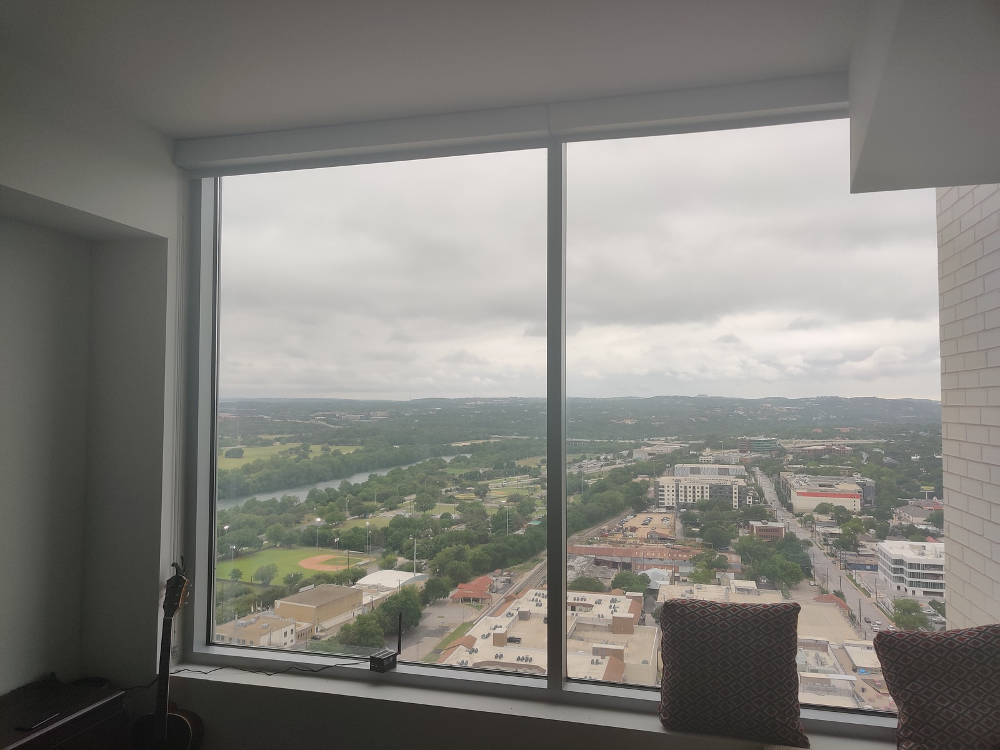

This week we focus on creating ideas for the final project. Initially I had two ideas based on projects I've seen before, and later another one based on a very real need of mine.
Project Idea #1 - Automatic Blinds
This idea is based on my personal need for roll-up blinds, and a project I saw a friend do similar to this. This works by rigging an existing set of window blinds with a motor that is connected to a microcontroller that can be wirelessly prompted to roll up blinds, either when you want them to or on a scheduled bases (at sunrise etc.)
However on further consideration, not only is this a boring project, but I don't even need this since I have no trouble falling asleep with open blinds and don't face the sunrise. It could be interesting to make a universal solution, where a device can work with most types of blinds and hence is viable as a consumer product, but that feels impractical.
Project Idea #2 - Smell Generator
My second idea is based on a project/startup idea I saw at an HBS startup immersion seminar, namely a device that releases specific smells when prompted. We have TVs to produce active visual input, sensors to produce audio, but nothing for smell.
At first this seemed like a very mediocre idea with no use case, but in theory this could be awesome if combined with television. Perhaps you make a device that allows for a multisensory movie-viewing experience: watch TV with not just audio-visial input, but also experience the smells involved in a specific scene. Smell the field of flowers the characters go through, or the trash heap they venture across, or an emission filled atmosphere of a dystopian future.
This could be cool, but may require machine vision beyond the scope of this class and might be impractical to collect enough smells to make this viable. Still something I would very much like to build in the future
Project Idea #3 - Automatic Sun-Blocker
This idea is based on an actual problem I have. Every day from around 3-8pm the sun is shining directly into my room, meaning that if I try to work on my computer or watch TV the sun will shine in my eyes and make it very difficult and annoying. I don't like closing the blinds since I lose a lot of natural light, and miss out on the great view out of my window.
I have tried putting up barriers to block the sun, however since it moves fairly quickly I have to reposition the barrier often.
To solve this, I propose building a device that will specifically track the sun and block it from hitting my eyes. This could be done with a robot with suction-cup wheels that moves along the window, or a 2d pulley system similar to the one Nathan used in his final project.
Ideally the device would detect where I am in the room and calculate where to position itself to block the sun from hitting my head. To do this I would have to buy a separate camera to use machine vision to track the position of my head, or I could simply wirelessly tell the microcontroller where I'm sitting (on the couch, on my bed, at my desk, etc) and it would adjust based on the position of the sun and my position.